这样的无理数是不能用分数表示的。据说，有一位学派成员在发现了无理数后，引起了毕达哥拉斯的恐慌，这位学派成员也因此被扔进大海淹死了。当然，这已经是很久以前的事了，并且任何文献中都没有相关记载，所以这一说法是否属实已不得而知。
这样的无理数是不能用分数表示的。据说，有一位学派成员在发现了无理数后，引起了毕达哥拉斯的恐慌，这位学派成员也因此被扔进大海淹死了。当然，这已经是很久以前的事了，并且任何文献中都没有相关记载，所以这一说法是否属实已不得而知。分数与小数的关系如同亲戚，同一个数有时可以同时有这两种表示方式。例如，0.5可以写为
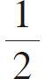
；0.333…可以写为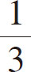
。但不知大家是否留意过，并不是所有小数都能用分数表示。我们来看看0.17839271这个小数，它仍然可以使用分数来表示，即
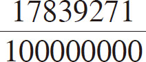
。由此看来，只要小数位有限，小数就都可以用分数来表示。但是，当小数点之后有无限个数字时，就会出现不能用分数来表示的情况。其实，一个小数能否用分数表示，取决于这个小数的小数点之后是否出现了循环数列 ，例如：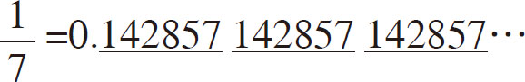
其中，“142857”这个数列在不停地重复。
但是，小数点之后不会出现循环数列的小数也是存在的。众所周知，圆的周长与直径的比值被称为“圆周率”。大家能说出圆周率小数点后面的几位数字呢？笔者用谐音记忆法可以背到小数点后的第40位，也就是：
π＝3.1415926535897932384626433832795028841971…
当背到圆周率小数点后第40位时，也没有发现循环数列。事实上，目前计算机得到的圆周率的数值已经到了数亿位、数十亿位，仍然没有发现循环数列。类似的数还有
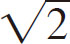
，如果将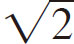
用小数表示，则为1.41421356…，无论写到小数点后多少位，都不会出现循环数列。类似这种小数点后有无限位，且不存在循环数列的数就不能用分数来表示 ，我们将这类数统称为“无理数 ”。无理数为什么不能用分数表示？这是一个很难回答的问题，但这个结论是绝对正确的。我们来看一个例子：
14/10＝1.4；
141/100＝1.41；
1414/1000＝1.414；
14142/10000＝1.4142；
……
按照上述计算过程进行下去，商看似一直在不断地接近
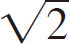
，会让人觉得它迟早会等于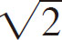
。为什么还断言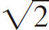
不能用分数来表示呢？我们假设
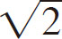
可以用分数来表示，就会得到一个非常奇怪的结果。我们不妨一起来验证一下。假设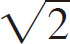
可以用分数来表示，具体如下：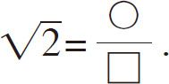
那么，○和□中一定至少有一个是奇数。因为如果这两个数都是偶数，用2进行约分，还会得到“其中至少有一个是奇数”的结果。所以这里一开始就将○和□设定为其中至少有一个是奇数。
然后，将等式左边乘以
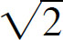
，等式右边乘以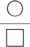
，即相当于等式两边都变为原来的 倍，等式依然成立，现在我们得到以下等式：
倍，等式依然成立，现在我们得到以下等式：
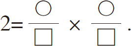
接下来，将等式两边分别乘以□×□，得到以下等式：
2×□×□＝○×○.
现在我们仔细分析一下上述等式。等式左边存在一个2倍关系，所以等式右边的“○×○”按道理应该是一个偶数。又因为奇数乘以奇数得到的一定是奇数，所以可以肯定“○”一定是偶数。也就是说，如果用“△”来表示自然数，就会得到“○＝2×△”的等式来。所以将
2×□×□＝（2×△）×（2×△）
这个等式两边都除以2，即可得到：
□×□＝2×△×△.
根据前面的推理，□也应该是一个偶数。于是矛盾出现了，我们可以肯定○和□中至少有一个是奇数，而此时的结论却是○和□都是偶数。
为什么会产生这样的矛盾呢？那是因为“
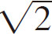
是可以用分数来表示的数”这个假设条件本身就是错误的。在错误的条件下进行的推理，自然会得到自相矛盾的结论。这种首先假设原条件正确，最后在推理中出现矛盾，由此证明原条件错误的论证方法被称为“反证法” 。“无理数不能用分数来表示”这个结论不是凭空得出的，我们已经通过上述推理证明了它是一个正确的结论。无理数最早是由古希腊数学家发现的。但是，古希腊最伟大的数学家毕达哥拉斯却否认无理数的存在。在以毕达哥拉斯为首的毕达哥拉斯学派的教义中，明确指出所有的数都可以用分数来表示。但是，我们已经知道类似
这样的无理数是不能用分数表示的。据说，有一位学派成员在发现了无理数后，引起了毕达哥拉斯的恐慌，这位学派成员也因此被扔进大海淹死了。当然，这已经是很久以前的事了，并且任何文献中都没有相关记载，所以这一说法是否属实已不得而知。
讽刺的是，只要用毕达哥拉斯亲自发现的“勾股定理”来计算一个图形的边长，就会出现他不承认的无理数。例如，用勾股定律来计算正方形对角线长度，如图2-10所示，会得到如下等式：
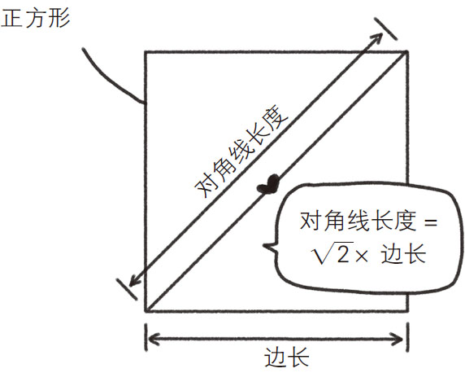
图2-10 用勾股定理计算正方形对角线长度
正方形对角线长度2 ＝边长2 ＋边长2 ＝2×边长2 .
显然，
正方形对角线长度＝
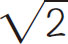
×边长.由此看来，即使是简单的图形中也隐藏着无理数。
无理数不只有
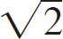
和π，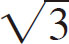
和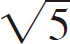
也都是无理数。另外，在微积分和概率论中起着重要作用的自然常数e（e＝2.71828…）也是一个无理数。值得注意的是，有一个数尚不能被断定是有理数还是无理数，这个数就是“欧拉常数 ”。这个数与微积分有关，其值大约为0.5772156649…。世界上不存在判断数是否为有理数的通用方法，我们只能一个一个地验证。而能验证欧拉常数是否为有理数的方法还没有被发现。我们虽然知道了证明圆周率和自然常数是无理数的方法，但也明白这比证明
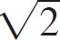
是无理数要难得多，因为必须具备微积分知识。从目前尚无一人能够证明欧拉常数是无理数可以看出，它的证明过程肯定要比证明 、圆周率、自然常数是无理数要复杂得多。
、圆周率、自然常数是无理数要复杂得多。
由于有理数和无理数统称为实数，所以任意一个实数不是有理数就是无理数 。在本书第四章“无限大的数”部分会对这一点进行详细说明。在所有实数中，无理数要比有理数多得多，因此欧拉常数很可能是一个无理数。既然不能证明它是有理数，那么暂且将它归入多数派队伍中也是可以理解的。但是在还没有证明这一结论之前我们不能妄下断言。如果将来谁能证明它是有理数或是无理数，那么他的名字一定会被铭刻在数学史上。大家有兴趣的话，不妨挑战一下吧！